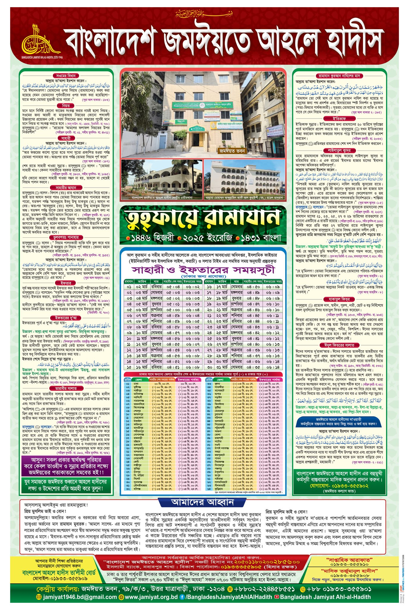

সার-সংক্ষেপে কিছু কথা
উপরোক্ত ক্যালেন্ডারের সময়-সূচী হলো বাংলাদেশ জমাঈয়তে আহলে-হাদিস কর্তৃক ১৪৪৬ হিজরী, ২০২৫ ইংরেজী ১৪৩১ বাংলা সন অনুযায়ী তৈরী বাংলাদেশের ইফতার ও সাহরীর সময়সূচী। উক্ত ক্যালেন্ডারের সময়-সূচী অনুযায়ী এই ওয়েব-এপ্লিকেশনটি তৈরী করা হয়েছে
Developed By : Mohammad Joynal Abedin